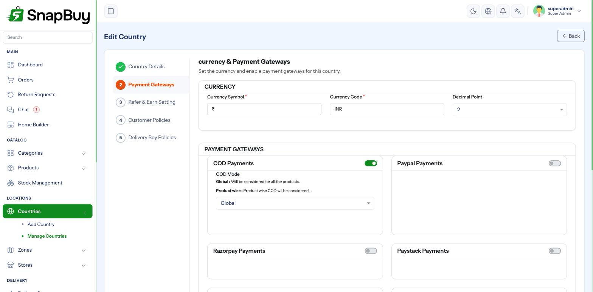

Payment Gateways
Configured per country, on the country record — not on a global settings page.
This is the thing people get wrong
There is no single "Payment Gateways" settings screen. Every gateway's credentials and its on/off switch live on the country it applies to.
If a gateway "is configured but customers cannot see it", you are almost certainly looking at the wrong place — open Countries → edit the country → Payment Gateways.

Why per country
Different regions need different processors. A store selling in India and the UAE cannot use one gateway for both — Razorpay settles in INR, PayTabs serves the Gulf. Attaching gateways to countries lets each region use what actually works there, in the right currency.
The Payment Method Settings master switch on the country turns online payment on or off for that country as a whole.
Supported gateways
| Gateway | Credentials needed |
|---|---|
| Cash on Delivery | None — just enable it |
| Razorpay | Key, Secret Key |
| Stripe | Publishable Key, Secret Key, Webhook Secret, Currency Code, Mode |
| PayPal | Business Email, Currency Code, Mode |
| Paystack | Public Key, Secret Key, Currency Code |
| Midtrans | Server Key, Mode |
| PhonePe | Merchant ID, Client ID, Client Version, Client Secret, Mode |
| Cashfree | App ID, Secret Key, Mode |
| PayTabs | Profile ID, Secret Key, Mode |
Installation enables Cash on Delivery only. Everything else starts disabled and blank.
Test mode and live mode
Most gateways carry a Mode field — test/sandbox or live.
Test and live keys are not interchangeable
Test keys in live mode reject every payment. Live keys in test mode either fail or, worse, take a real payment through a sandbox flow that never settles.
Before launch, confirm for each enabled gateway: mode is live, and the keys are the live keys from the provider's dashboard — not the ones you tested with.
Recommended sequence:
- Configure in test mode.
- Place a full test order end to end.
- Confirm the order reaches Paid in the panel.
- Switch mode to live and replace the keys.
- Place one real low-value order and refund it.
Always do a real live transaction before launch
A successful sandbox payment proves your keys parse. It does not prove your live account is activated, your KYC is approved, or your settlement account is attached. One real order catches all three.
Webhooks
Several gateways confirm payment by calling your server rather than the customer's browser. If a customer closes the app after paying, the webhook is the only thing that marks the order paid.
| Gateway | Webhook / callback URL |
|---|---|
| PayPal (IPN) | https://admin.yourstore.com/ipn |
| Stripe | https://admin.yourstore.com/webhook/stripe |
| Razorpay | https://admin.yourstore.com/webhook/razorpay |
| PhonePe | https://admin.yourstore.com/phonepe/callback |
| Midtrans | https://admin.yourstore.com/midtrans/callback |
| Cashfree | https://admin.yourstore.com/cashfree/callback |
| PayTabs | https://admin.yourstore.com/paytabs/callback |
Register these in each provider's dashboard.
Payments taken but orders stuck unpaid
This is the classic missing-webhook symptom: money leaves the customer's account, the gateway shows it as captured, and the order sits unpaid in your panel.
Check that the webhook URL is registered, reachable over HTTPS, and that your host is not blocking the request.
Webhook endpoints are exempt from CSRF by design
These URLs are server-to-server POSTs with no session, so SnapBuy exempts them from CSRF checks. That is expected — do not attempt to "secure" them by removing the exemption, or payments will stop confirming.
Stripe webhook secret
Stripe additionally needs a Webhook Secret (whsec_…), issued when you create the endpoint in the Stripe dashboard. Without it, SnapBuy cannot verify the request is genuinely from Stripe and rejects it.
Currency must match
Each gateway's Currency Code must match:
- The country's currency code, and
- What your gateway account is actually able to settle in.
Mismatched currency is charged wrong, not blocked
A country set to INR with a gateway set to USD does not error — it charges the number as dollars. An order of ₹500 becomes a $500 charge. Check both sides.
Cash on Delivery
COD needs no credentials. Its mode setting controls where it is offered.
Consider limits on COD
COD carries real cost — failed deliveries, cash handling, reconciliation. If you offer it, pair it with a delivery OTP (see App Settings) so handovers are provable.
Refunds
Refunds are issued from the order and flow back through the original gateway, or to the customer's wallet depending on how the refund is processed.
Refunds need the gateway to stay configured
Removing or rotating a gateway's credentials breaks refunds for past orders taken through it. Keep credentials in place while any refundable orders remain.
Security
Secret keys are as sensitive as your bank login
- Never share them over chat or email
- Never paste them into a support ticket
- Rotate immediately if exposed
- Restrict panel access to Payment settings by role
Anyone with access to this screen can read your live gateway credentials.
Troubleshooting
| Symptom | Cause | Fix |
|---|---|---|
| Gateway not visible to customers | Not enabled on the customer's country | Enable it on that country |
| No online payment options at all | Payment Method Settings master switch off | Turn it on for that country |
| Every payment declined | Test keys in live mode, or account not activated | Check mode and keys; confirm KYC with the provider |
| Money taken, order unpaid | Webhook not registered or unreachable | Register the URL; confirm HTTPS access |
| Stripe webhook rejected | Missing or wrong webhook secret | Copy whsec_… from the Stripe dashboard |
| Charged in the wrong currency | Gateway currency ≠ country currency | Align both |
| Works on web, fails in the app | Return URL or deeplink not configured | See Deeplink Settings |
| Refund fails on an old order | Gateway credentials changed | Restore the credentials used at the time |
Launch checklist
- Gateway enabled on every country you sell in
- Mode set to
livefor each - Live keys in place, not test keys
- Currency code matches the country and the gateway account
- Webhook URLs registered and reachable
- Stripe webhook secret entered
- One real live payment completed and refunded
- Access to payment settings restricted by role